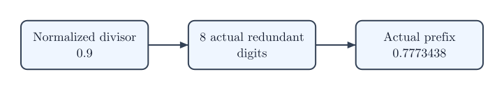
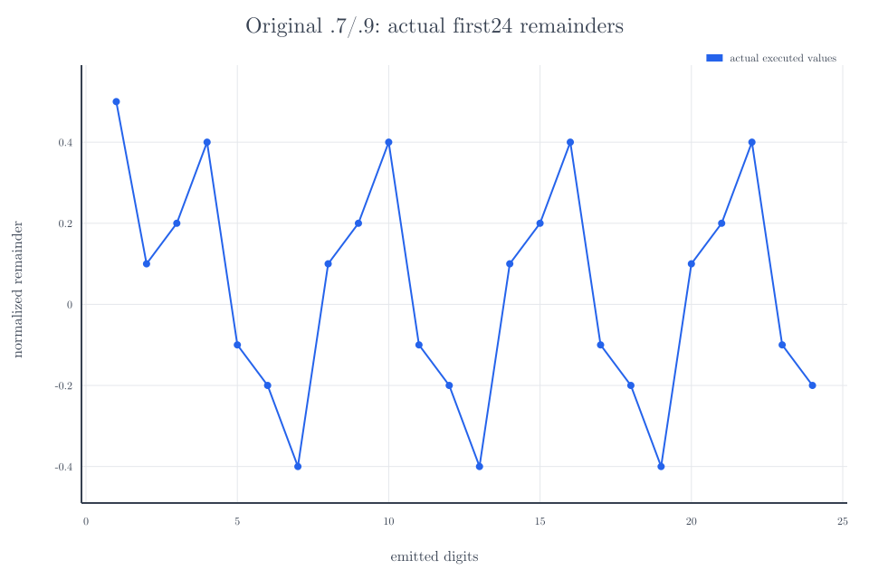
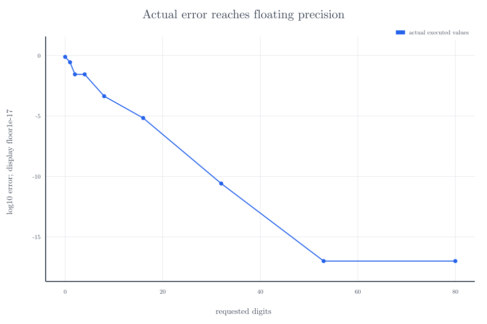
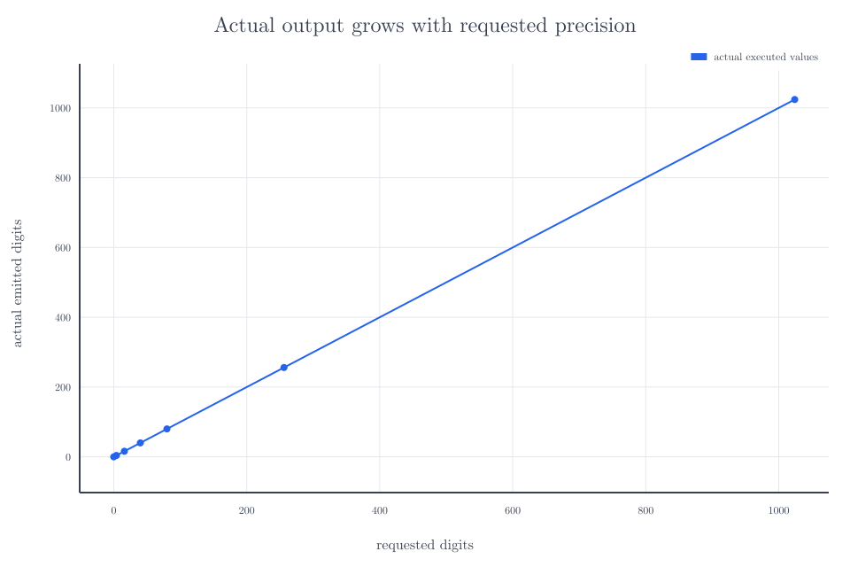

SRT division: redundant digits and actual partial remainders
Abstract
A radix-two redundant quotient uses digits -1,0,+1 to keep the partial remainder bounded. This floating simulation exposes the actual selector, normalization and accumulator rather than a separately replayed remainder curve.
Mechanism and mathematical scope
Normalize d into[1/2,1) and scale n by the same power of two. Starting P0=n, at digit j set w=2P, choose +1 at w>1/2, -1 at w<-1/2 and0 otherwise, then P=w-q*d. Accumulate Qj=sum(q_i*2-i). In exact arithmetic n/d=Qj+Pj/(d*2j), and Pj<d yields error<2^-j. This mathematical tail is distinct from double rounding and underflow. The selector uses complete floating values; it is not a hardware leading-bit lookup or timing model.
A tiny actual producing history
The table and native concept diagram read the same producing execution. Every block below is a complete editable C++ program.
#include <dm/dm.hpp>
int main() {
namespace a = dm::algorithms;
namespace g = dm::graphics;
std::filesystem::create_directories("build");
auto r = a::srt_division_trace(.7, .9, 8);
std::print("| digit | remainder before | shifted | q | remainder after | prefix |\n| ---: | ---: | ---: " "| ---: | ---: | ---: |\n");
for (const auto &s : r.steps)
std::print("| {} | {:.9g} | {:.9g} | {} | {:.9g} | {:.9g} |\n", s.index,
s.before, s.shifted, s.digit, s.after, s.value);
g::Diagram concept_diagram(48, 1100);
concept_diagram.node("n0", {0, 0},
std::format("Normalized divisor {:.4g}",
r.normalized_divisor));
concept_diagram.node("n1", {5, 0},
std::format("{} actual redundant digits",
r.digits.size()));
concept_diagram.node("n2", {10, 0},
std::format("Actual prefix {:.7g}", r.value));
concept_diagram.edge("n0", "n1").edge("n1", "n2");
concept_diagram.save_svg("build/srt_division_tiny.svg");
}| digit | remainder before | shifted | q | remainder after | prefix |
|---|---|---|---|---|---|
| 0 | 0.7 | 1.4 | 1 | 0.5 | 0.5 |
| 1 | 0.5 | 1 | 1 | 0.1 | 0.75 |
| 2 | 0.1 | 0.2 | 0 | 0.2 | 0.75 |
| 3 | 0.2 | 0.4 | 0 | 0.4 | 0.75 |
| 4 | 0.4 | 0.8 | 1 | -0.1 | 0.78125 |
| 5 | -0.1 | -0.2 | 0 | -0.2 | 0.78125 |
| 6 | -0.2 | -0.4 | 0 | -0.4 | 0.78125 |
| 7 | -0.4 | -0.8 | -1 | 0.1 | 0.77734375 |

The retained original experiment
#include <dm/dm.hpp>
int main() {
namespace a = dm::algorithms;
namespace g = dm::graphics;
std::filesystem::create_directories("build");
auto r = a::srt_division_trace(.7, .9, 40);
std::print("Original N=.7,D=.9,bits40; first16 digits `{}`; quotient {:.17g}; native division {:.17g}; " "absolute error {:.9g}.\n",
std::vector<int>(r.digits.begin(), r.digits.begin() + 16),
r.value, .7 / .9, std::abs(r.value - .7 / .9));
std::vector<double> x, y;
std::print("| actual first24 steps | remainder |\n| ---: | ---: |\n");
for (std::size_t i = 0; i < 24; ++i) {
x.push_back(i + 1);
y.push_back(r.steps[i].after);
std::print("| {} | {:.12g} |\n", i + 1, y.back());
}
auto plot = g::RPlot::create();
plot.lines(x, y, "actual executed values", {37, 99, 235}).points(
x, y, {37, 99, 235}, 4).title("Original .7/.9: actual first24 remainders").x_label("emitted digits").y_label("normalized remainder");
plot.save_svg("build/srt_division_original.svg");
}Original N=.7,D=.9,bits40; first16 digits [1, 1, 0, 0, 1, 0, 0, -1, 0, 0, 1, 0, 0, -1, 0, 0]; quotient 0.77777777777737356; native division 0.77777777777777768; absolute error 4.04121181e-13.
| actual first24 steps | remainder |
|---|---|
| 1 | 0.5 |
| 2 | 0.1 |
| 3 | 0.2 |
| 4 | 0.4 |
| 5 | -0.1 |
| 6 | -0.2 |
| 7 | -0.4 |
| 8 | 0.1 |
| 9 | 0.2 |
| 10 | 0.4 |
| 11 | -0.1 |
| 12 | -0.2 |
| 13 | -0.400000000001 |
| 14 | 0.099999999999 |
| 15 | 0.199999999998 |
| 16 | 0.399999999996 |
| 17 | -0.100000000008 |
| 18 | -0.200000000016 |
| 19 | -0.400000000032 |
| 20 | 0.0999999999353 |
| 21 | 0.199999999871 |
| 22 | 0.399999999741 |
| 23 | -0.100000000517 |
| 24 | -0.200000001035 |

Explicit controls
#include <dm/dm.hpp>
int main() {
namespace a = dm::algorithms;
namespace g = dm::graphics;
std::filesystem::create_directories("build");
std::vector<double> x, y;
std::print("| bits | actual quotient | actual error | nominal exact-arithmetic tail |\n| ---: | ---: | " "---: | ---: |\n");
for (int b : {0, 1, 2, 4, 8, 16, 32, 53, 80}) {
auto r = a::srt_division_run(.7, .9, b);
x.push_back(b);
y.push_back(std::log10(std::max(std::abs(r.value - .7 / .9), 1e-17)));
std::print("| {} | {:.17g} | {:.9g} | {:.9g} |\n", b, r.value,
std::abs(r.value - .7 / .9), r.nominal_tail_bound);
}
try {
a::srt_division_run(1, 0, 4);
} catch (const std::invalid_argument &) {
std::print("Zero divisor rejected before normalization.\n");
}
auto plot = g::RPlot::create();
plot.lines(x, y, "actual executed values", {37, 99, 235}).points(
x, y, {37, 99, 235}, 4).title("Actual error reaches floating precision").x_label("requested digits").y_label("log10 error; display floor1e-17");
plot.save_svg("build/srt_division_controls.svg");
}| bits | actual quotient | actual error | nominal exact-arithmetic tail |
|---|---|---|---|
| 0 | 0 | 0.777777778 | 1 |
| 1 | 0.5 | 0.277777778 | 0.5 |
| 2 | 0.75 | 0.0277777778 | 0.25 |
| 4 | 0.75 | 0.0277777778 | 0.0625 |
| 8 | 0.77734375 | 0.000434027778 | 0.00390625 |
| 16 | 0.77777099609375 | 6.78168403e-06 | 1.52587891e-05 |
| 32 | 0.77777777775190771 | 2.58699728e-11 | 2.32830644e-10 |
| 53 | 0.77777777777777768 | 0 | 1.11022302e-16 |
| 80 | 0.77777777777777768 | 0 | 8.27180613e-25 |
Zero divisor rejected before normalization.

Actual selected work and sensitivity
#include <dm/dm.hpp>
int main() {
namespace a = dm::algorithms;
namespace g = dm::graphics;
std::filesystem::create_directories("build");
std::vector<double> x, y;
std::print("| requested digits | actual emitted digits | actual -1 / 0 / +1 counts |\n| ---: | ---: | " "--- |\n");
for (int b : {0, 4, 16, 40, 80, 256, 1024}) {
auto r = a::srt_division_run(.7, .9, b);
x.push_back(b);
y.push_back(r.digits.size());
std::print("| {} | {} | `{}` |\n", b, r.digits.size(), r.counts);
}
auto plot = g::RPlot::create();
plot.lines(x, y, "actual executed values", {37, 99, 235}).points(
x, y, {37, 99, 235}, 4).title("Actual output grows with requested precision").x_label("requested digits").y_label("actual emitted digits");
plot.save_svg("build/srt_division_work.svg");
}| requested digits | actual emitted digits | actual -1 / 0 / +1 counts |
|---|---|---|
| 0 | 0 | [0, 0, 0] |
| 4 | 4 | [0, 2, 2] |
| 16 | 16 | [2, 10, 4] |
| 40 | 40 | [6, 26, 8] |
| 80 | 80 | [13, 50, 17] |
| 256 | 256 | [51, 152, 53] |
| 1024 | 1024 | [224, 580, 220] |

API and interpretation
Finite proper fractions0<=N<D with positive D are supported. Negative/oversized counts and invalid operands fail explicitly. The nominal tail is an exact-arithmetic reference represented as double, not a certificate for the floating result. Extremely small normalized numerators or long-digit weights can underflow. Histories and legacy digit reconstruction share the same producer accumulator.
Reusable producers, fixtures and histories live in the canonical C++ library. Captured records own their values and do not come from a separate report replay. Selected counters and record/scalar policies are specified at their API boundaries; they are not peak-byte or wall-time budgets. Synthetic structural inputs are controlled fixtures for these mechanisms.
References
- Robertson, A New Class of Digital Division Methods, IRE Transactions on Electronic Computers EC-7 (1958),218-222
Verified in the shared ten-document batch: 58 scoped native cases;20 directly
instrumented ASan/UBSan cases;90 executable public examples;416/416 definitions
across25 full scopes;10 hovers;1968 independent records/417332 checks;frozen
comparisons across all ten families with SIP returned-iterate correction
recorded;14 checkout/installed standalone headers and linked ten-family
consumer;40 executed programs and40 inspected figures with both exports.
Receipts: build/mepml-conversion/batch-374-383/.